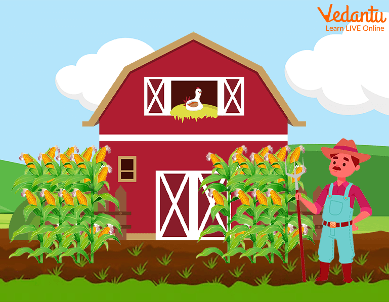

This is one of the best and most inspirational short stories to read for children. Once upon a time, parents used to describe the stories of farmers, which represent their greatness in farming the land, cultivating the crops, and helping the successful living of the citizens. In India, they are said to be the backbone of the country and citizens of India value them a lot.
There was once a farmer who owned huge cornfields. In the neighbourhood, he grew the best corn. Every year, he won first place at the state fair, and in late summer, everyone came to his fields to sample his delicious crop. A Farmer Cultivating the Farmland with Cows.A news reporter visited the farmer one day to interview him and learn about his secrets to success. The farmer would always share his best-producing seeds with the nearby farms, according to the reporter's study days before the interview. When it came time for the interview, the reporter had a powerful question prepared for him. "Sir, why do you share your best seeds with your neighbours, knowing that they will enter their corn into the competition against you?" the reporter asked. Isn't this going to make it more difficult for you to win?" Before responding, the farmer lifted his head and took a long breath. "During the season, as the strong wind blows over the fields, pollen from ripening corn gets whirled from field to field," the farmer explained. The most important thing to remember is that if my neighbours grow low-quality corn, cross-pollination will eventually lower the quality of my own corn. As a result, if I wish to grow wonderful corn, I must also assist my neighbour in growing good corn."
A Farmer Growing the Corn. We must recognise the importance of enriching the lives of others in order to live a meaningful and happy life. We find true satisfaction when we share it with others.
Everyone benefits when we give and share happily and take thankfully.